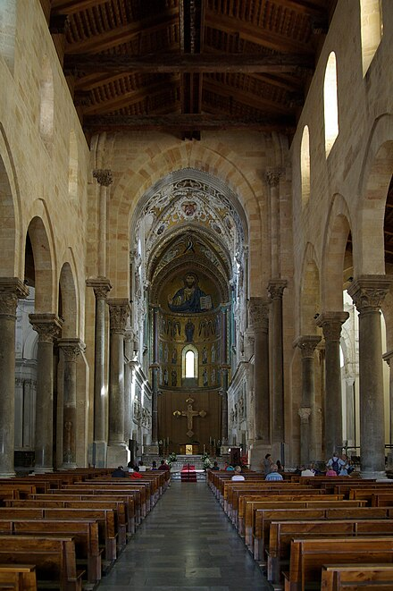

The cathedral was built in a long-populated area, as attested by the presence of a Roman road and a Paleo-Christian mosaic. Construction began in 1131, the apse mosaics were begun in 1145, and the sarcophagi that Roger II provided for his tomb and that of his wife were put in place the same year. After 1172 the church suffered a period of decline. In 1215 Frederick II of Hohenstaufen moved the two sarcophagi to the Cathedral of Palermo. Construction of the cathedral was resumed soon after, the façade being completed in 1240. The cathedral was consecrated in 1267 by Rodolphe de Chevriêres, Bishop of Albano
The Duomo consists of two large Norman towers with mullioned windows and small spires. Each spire is unique from one another. There is a large terraced parvis that originally served as a cemetery. There is a portico with three arches, the two on the outside are pointed and supported by four columns and vaulting ribs. The interior of the cathedral is in the shape of a Latin cross. It has a nave and two aisles that shape the cross.The interior combines multiple styles such as Romanesque in its massive simple forms and Gothic with its pointed arch. The Duomom has been decorated with presbyterium mosaics inside.
